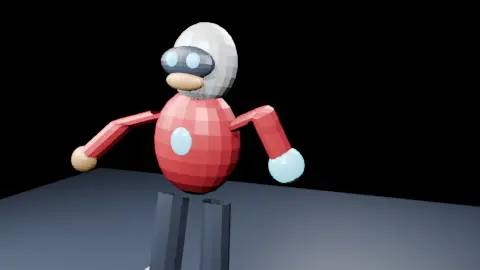
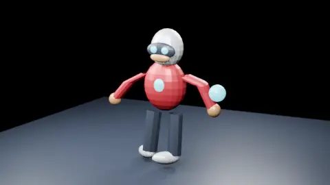
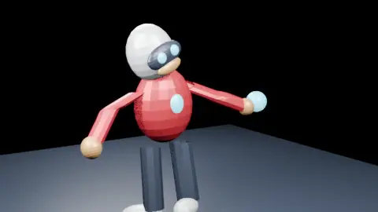

Real skeletal acting
Four continuous skinned meshes visibly deform as the armature moves. The scene has torso, head, jaw, jointed arms, legs, IK and a prop contact event.
NATIVE BLENDER MILESTONE · 17 OCT 2026
Real geometry. An actual skeleton. Weighted deformation. A complete twelve-second film—and the receipts that prove what was rendered.
TECHNICAL PROOF VERIFIEDFull autonomous studio: still in development.

FRAME 224 / 288 · BLENDER EEVEE
01 / THE FILM
One character. One object. Three deliberate shots. The story of an attempted grasp.


02 / EVIDENCE, NOT CLAIMS
This is a native Blender scene with skin deformation—not a cutout, a rotating static model, or a slideshow.
Four continuous skinned meshes visibly deform as the armature moves. The scene has torso, head, jaw, jointed arms, legs, IK and a prop contact event.
Blender Eevee rendered every frame. The encoded MP4 passed full FFmpeg decoding, frame-count, duration and source-integrity checks.
This is a modest 480×270 technical film. A general autonomous pipeline, full-HD artistic release and live ChatGPT MCP integration remain unverified.
SHA-256 · MP4
e180b5320636c2d31b411426f526eb27795b5e0e6895230bcf94c133b758e022SHA-256 · BLEND
3a778c61eaa53493d1471df54c3ccd1a4d5967e54bc3c575a2b3a9aefae98ceb03 / TAKE IT APART
Film, editable rig, portable skeletal asset, and the working code. Open them. Inspect them. Make the next scene.